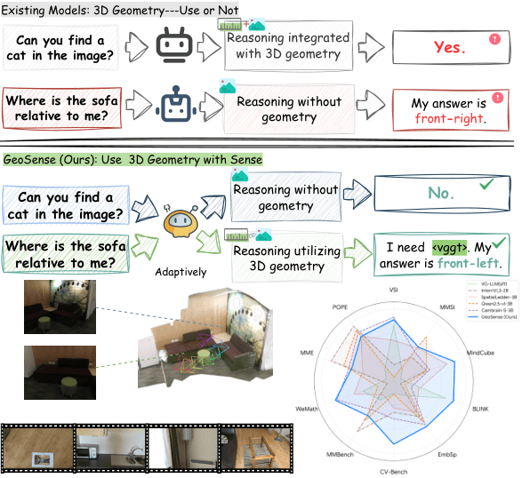
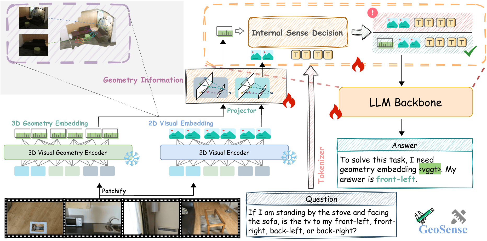

Advancing towards artificial superintelligence requires rich and intelligent perceptual capabilities. A critical frontier in this pursuit is overcoming the limited spatial understanding of Multimodal Large Language Models (MLLMs), where geometry information is essential. Existing methods often address this by rigidly injecting geometric signals into every input, while ignoring their necessity and adding computation overhead.
Contrary to this paradigm, our framework endows the model with an awareness of perceptual insufficiency, empowering it to autonomously engage geometric features in reasoning when 2D cues are deemed insufficient. To achieve this, we first introduce an independent geometry input channel to the model architecture and conduct alignment training, enabling the effective utilization of geometric features. Subsequently, to endow the model with perceptual awareness, we curate a dedicated spatial-aware supervised fine-tuning dataset. This serves to activate the model's latent internal cues, empowering it to autonomously determine the necessity of geometric information. Experiments across multiple spatial reasoning benchmarks validate this approach, demonstrating significant spatial gains without compromising 2D visual reasoning capabilities, offering a path toward more robust, efficient and self-aware multi-modal intelligence.
GeoSense dynamically modulates its reliance on geometry input. The training framework consists of two main stages:
<vggt>, to request geometric embeddings. If the signal is not triggered, the model suppresses the channel to maintain 2D visual reasoning purity. 
Our proposed model significantly outperforms the baseline Qwen2.5-VL-3B on spatial reasoning benchmarks under comparable training data scales.